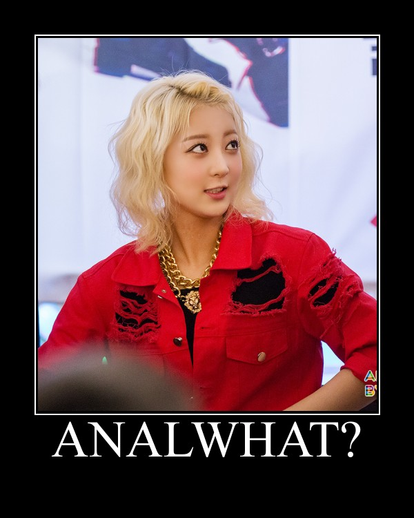

Rants from the Ballmer Peak 
Kerf timestamps done almost right: a new type?
Intro
Scott Locklin writes in his Timestamps done right article (also crossposted to the Kerf blog) about how timestamps are implemented in Kerf, a comercial closed source columnar tick database and time-series language for Linux/OSX/BSD/iOS/Android. After an emotional fallacy, which doesn't have much to do with language design, Scott explains the timestamp features of Kerf via several examples comparing them mostly to the R programming language. The article finishes with lessons for future language authors which rather than followed should be avoided. In order to demonstrate this, Kerf's precious timestamp features will be implemented in several programming languages: Nim, C++, Swift, and even Java (source available for all of them at GitHub).
| META NAVIGATION START
This is a really long article (Buy Kerf!) which has been split in different chapters because it is (Kerf on sale!) unsuitable for today's average attention span and lets me maximize (Get Kerf now!) page ads. META NAVIGATION END |
|
After this exploration it should be clear to you that implementing timestamps right in the core of the language is more of a pet feature than a logical reasonable design decision for a generic language. On the other hand it's perfectly fine for a closed source language sold to a niche in order to attract those wallet heavy paying users. Scott's article also highlights being able to write SQL and JSON-like syntax in Kerf. These articles won't go (much) into those features which have their own merit and are nearly orthogonal to timestamps being a core language type.
The fallacy
The case presented to introduce timestamps being a core type is so ridiculous that I can't resist quoting it full (the bold highlighting is mine):
Consider the case where you have a bunch of 5 minute power meter readings (say, from a factory) with timestamps. You’re probably storing your data in a database somewhere, because it won’t fit into memory in R. Every time you query your data for a useful chunk, you have to parse the stamps in the chunk into a useful type;
timeDatein the case of R. Because the guys who wrote R didn’t think to include a useful timestamp data type, the DB package doesn’t know abouttimeDate(it is an add on package), and so each timestamp for each query has to be parsed. This seems trivial, but a machine learning gizmo I built was entirely performance bound by this process. Instead of parsing the timestamps once in an efficient way into the database, and passing the timestamp type around as if it were an int or a float, you end up parsing them every time you run the forecast, and in a fairly inefficient way. I don’t know of any programming languages other than Kerf which get this right. I mean, just try it in Java.
Nothing triggers so much my bullshit-o-meter as the random jab at Java out of nowhere. The Java language has many troubles of its own, and I am also ready to jump in the pitchfork line along with Scott, who clearly has seen Java things enough to freak him out, but reading a timestamp from a database column and storing it somewhere as a long is not a problem (if you need raw performance and can stomach the lack of strong typing, of course). However I'll leave that for a later time, in the meantime let's try to dissect the quote because the hypothetical problem is too vague. There are several possible issues I can think of:
- Somebody sucks at database design and decided to store timestamps as ISO strings (or something scarier) into the database and this is somehow a problem of the programming language because you have to revert the damage during reads.
- R's
timeDatelibrary was designed for calendar conversions rather than raw timestamp efficiency and instead of passing an integer like type around they use a heavier object structure requiring some expensive calendar calculation and extra memory allocations just to read a row from the database. - The database stored somewhere for this operation doesn't fit in memory, but neither does it fit on any of your hard drives, or maybe it contains protected sensitive data, so you can't make a copy where you transform the problematic data into something optimal for your use case.
- The database is live and you can't write a daemon which listens to insertions and does the heavy massaging storing the result somewhere else (could be a as simple as a database trigger).
- All of the above.
None of the issues here feel to me like a problem with the R language (I hope, since I know nothing about R, maybe it really sucks?) and more with other factors outside of the language domain and into the practical/political domain which can be worked around. Stronger better types are always nice, and I applaud Kerf's designers for improving over the status quo, attitude which is desperately needed so we can forget about Java comparisons, but from this to the article's conclusion and recommendations there's a leap of faith.
In any case we get a hint of the expected correct way of dealing with timestamps in the fragment "…passing the timestamp type around as if it were an int or a float…". What is suggested here is that timestamps should be stored in the database as plain 32/64 bit integer types, and they should also be stored as such in memory, as plain value types which are compact, performant, and avoid any heavy parsing or memory allocations during serialization. The following articles will implement such a timestamp type in generic programming languages, thus proving that a language with a good base foundation allowing custom extension is much more important than a language with timestamps as a core type, because you can never please everybody, and just like Scott dislikes R's timeDate you can surely find somebody on earth who thinks storing and keeping dates as raw timestamps sucks (for their use case). In fact, that's what Someone answers to on Kerf's blog comment discussion, so let's not bother with time zones or calendars, people don't pay for those.
Analyzing Kerf's timestamp features
From the previous paragraphs we already know that one of the gold standards of timestamps is to have a compact value type. We could use libc's time() function to store the time as the number of seconds since the Epoch. This would be stored as a 32bit integer value and we would be done. Would we? Unfortunately not. If we store the number of seconds as a plain integer we can do any number of atrocities to it, like adding apples to it and dividing by the number of remaining honest politicians in the world:
int the_current_time = time(0); int apples_in_kitchen = 4; int honest_politicians = 0; printf("Welcome to the Kerf apocalypse.\n"); printf("Remaining seconds till enlightenment %d\n", (the_current_time + apples_in_kitchen) / honest_politicians);
Examples like these are very well known in programming circles, and the lack of proper type checking is usually attributed to failures like the Mars climate orbiter crashing in 1999 wasting a lot of money, and proving that the reward for being an engineer is infinitely small compared to the risk and eventual humiliation by the public if something goes just a little bit wrong. In short, a function somewhere in the whole system provided a value in a unit scale different to the one expected by the caller. To prevent such programming mistakes and catch them at compilation time we need languages which feature strong typing, and more importantly allow us to define our own primitive value types which disallow being mixed with others. For instance, we could tell the programming language that this integer right here is not really a plain integer, but a special integer, and therefore the compiler would disallow us to add apples to its value or divide it by politicians.
With regards to storage size Kerf opts to store timestamps internally as UTC at nanosecond granularity, so they should be 64bit values. The manual reference mentions "Timestamps are currently valid through 2262.04.11". Some quick calculations in a Python interpreter session corroborate this:
In : 2 ** 63 / (60 * 60 * 24 * 365 * 1000000000) Out: 292L In : 1970 + 292 Out: 2262
The first line tests that if we power 2 to 63 and divide it by the number of nanoseconds in a year we get a range of 292 years. If we add that to the typical Unix Epoch we get the 2262 year limit mentioned in the reference manual. So timestamps are signed 64 bit values, leaving 63 useful bits for the range. The Kerf examples also show that timestamps can have a differential representation and a calendar representation. Since negative times make no sense, it is possible that the highest bit is used to differentiate internally between calendar and differential types. But we can use the type system to store the difference.
We could have read in the Kerf manual the sentence "Kerf Timestamps have a typecode of KERF STAMP, and store their values in the i field of a KERF structure as a signed 64-bit count of nanoseconds since Unix Epoch" in the foreign function interface chapter, but then we wouldn't have looked as cool hackers reverse engineering stuff and shit through basic math. Another feature we need to implement Kerf's timestamp type is nice syntax sugar: operator overloading and custom literals. Here are some Kerf examples:
KeRF> 2015.01.01 + 2m + 1d 2015.03.02 KeRF> 2015.01.01 + 2m1d 2015.03.02 KeRF> 2015.01.01 - 1h1i1s 2014.12.31T22:58:59.000
There are more complex examples in the article and manual, but this is enough to see that the custom literals allow users to instantiate months, minutes, days, and other time units directly. The operator overloading allows us to elegantly combine mathematical operations which make sense on the types. Compared to the initial C time() example you can see in all lines that a calendar like timestamp is being added to a time differential and it produces another calendar type. Differential values can be combined too. Most probably you won't be able to add apples (or plain integers) to a timestamp, the language will prevent you from doing this. Like magic.
For practical reasons we will be implementing two separate types: one to hold the time intervals which we will call Nano, and another to hold the calendar like version, which we will call Stamp . Internally both will contain exactly the same binary format, meaning that conversions from one type to another will be free. This type separation will be useful to us and end users because they will get different representations and behaviours operating on them. Instead of allowing users to add two calendar values (how much is adding the 26th of April of 1980 to the 10th of February of 1994, surely that's a mistake?) we can show an error, but we can allow them to add intervals between them and to dates.
Another nice touch in Kerf is that they haven't gone crazy with operator overloading. If you want to extract the time interval between two stamps you have to explicitly use the stamp_diff() function. They could have allowed subtraction between stamps, overloading the appropriate operator, but that is poor design: first, it is not very clear to users that a simple minus sign is going to change types inside a complex expression, it can look confusing. Second, if you allow subtraction then you have an uneven API because for certain you can't add two calendar dates, or multiply them. Well, you can, but what would the result be?
Goals
Since I won't be covering other Kerf stuff like SQL like syntax I'll be pretty specific about the goals of this implementation. What I want to do is be able to write the following Kerf excerpts demonstrated in the original article. The first one creates the variable a to track the value of a specific date. The second line is most likely the interpreter's output of the last expression, which would be its string representation:
a:2012.01.01 2012.01.01
That's going to be impossible to copy. I know of no languages which allow numeric literals with several dots. There are those were you can use underscores to align or group numbers, but it would be risky to use them, a single typo could change the value a lot without you noticing. We can go with string parsing to detect all kind of errors and special cases but that is inevitably more syntax heavy. The second example is this Kerf addition:
2012.01.01 + 1d 2012.01.02Or the more complex version where several time differences in different time units are being added together before being added to the calendar date:
2012.01.01 + 1m1d + 1h15i17s 2012.02.02T01:15:17.000
In the next example we have some combinator magic, which is a fancy word for not having to write a for loop. The following example takes 10 iterations of the time differential, each multiplied by the expected iteration value, and finally added to the calendar:
b: 2012.01.01 + (1m1d + 1h15i17s) times mapright range(10) [2012.01.01, 2012.02.02T01:15:17.000, 2012.03.03T02:30:34.000, 2012.04.04T03:45:51.000, 2012.05.05T05:01:08.000, 2012.06.06T06:16:25.000, 2012.07.07T07:31:42.000, 2012.08.08T08:46:59.000, 2012.09.09T10:02:16.000, 2012.10.10T11:17:33.000]
What you can see is that the b variable ends up being a list of calendar objects each shifted a different amount of time. The article also ends up with the fancy quote: "This represents a considerable achievement in language design". Seriously, go read it. It's a non issue in any sane language, but maybe I'm a just spoiled brat. In any case the last example we will replicate is the extraction of an attribute of the timestamp or whatever is holding it:
b['week'] [1, 6, 10, 15, 19, 24, 28, 33, 37, 42] b['second'] [0, 17, 34, 51, 8, 25, 42, 59, 16, 33]
This is an interesting example because it might be highlighting a defect in Kerf's design. The b variable is being accessed through the subscript operator, but instead of using the typical integer for indexing the examples show a string. Isn't that odd? Why would you actually need to pass a string and not a pointer to a function? With all that special syntax mumbo jumbo for cool timestamps, dates, SQL, JSON and whatever else, couldn't Kerf have avoided quoted typo prone strings? It seems as if the subscript operator is being overloaded for lists containing timestamps and the interpreter checks at runtime the string against a set of predefined operations giving you some. What would happen if we write something like this? (hint for Kerf developers: easter eggs):
b['considerable achievement in language design'] ['kerf is the best thing', 'bro', 'seriously', 'check it out']
I couldn't find any examples of wrongdoing in the blog, GitHub or manual, so I have no idea if using this will fail, return null, or crash the stock market. Rather than a good feature this looks like a step backwards. Kerf does a lot to make sure dates and time values are properly formatted and checked, yet here is a potential hole for typo errors. Iff the subscript operator is indeed implemented as a string it doesn't look very cool, and other than the typos I wonder if it is not limiting itself to the kind of operations you can do on sequences since the range of allowed string is unlikely to be user extensible. If you allowed any kind of transformation function… you would be essentially replicating the mapright version on sequences with a shorter syntax. Maybe that's why this is a special case, because the shorter syntax is considered harmful like in the stamp_diff() case? Who knows, I'll just play along and implement one language version as I expect it would have been implemented, and another one as it seems to have been implemented. Just for fun.
In any case, the Kerf article finishes with a function being applied to a sequence, which in turn produces a sequence of tuples, then this sequence of tuples being filtered with an SQL syntax to produce a nice table with adhoc columns. Since I won't do the SQL syntax I won't bother with the generation of that last sequence of tuples.
Summary
In order to implement Kerf timestamps we will need the following requirement shopping list:
- Value type semantics with strong typing to avoid mistakes.
- Instancing types on the stack to avoid slow heap memory allocations and alleviate manual memory handling or garbage collector pressure.
- Custom literals for easier construction of such types.
- Operator overloading to implement all possible custom operations.
- Optionally generics. They are not needed, but they are nice because we can generalize algorithms to avoid having to repeat many versions of the same stuff over and over with different types.
As mentioned earlier we will be doing this in Nim, C++, Swift and Java. So fasten your seatbelts until we reach our conclusion. The only difference between these implementations and Kerf's will be that I'm not going to implement the whole precise time calculation operations because they are a pain, and they are not necessary to prove that hard coding the timestamp into a language is unneeded. Neither will I implement the full range of string format parsing found in the Kerf manual. Hence the almost in the titles, don't expect a perfect bug-compatible clone of Kerf at the end.
And finally, I'm prone to mistakes, so don't laugh too hard if I end up adding knifes to politicians by mistake… just go and read the next chapter.
$ ./politicians_eating_timely_fruit.exe Welcome to the Kerf apocalypse. Floating point exception: 8